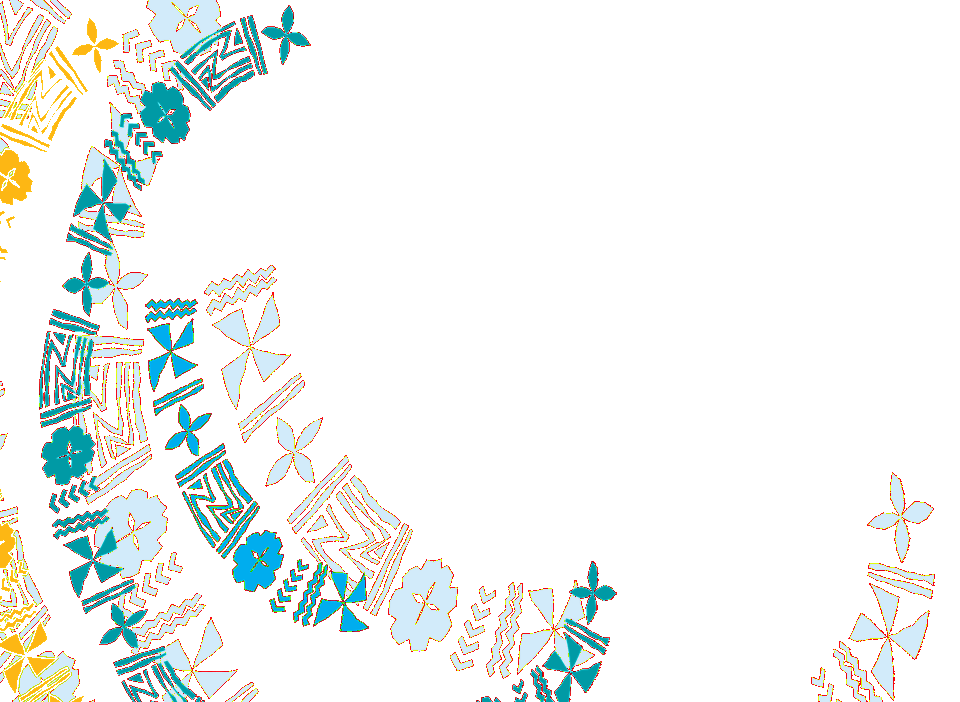

A regional platform supporting resilient public finance systems across PIC-11 through diagnostics, policy guidance, practical tools, and regional collaboration.
Browse country fiscal resilience profiles, diagnostics, and pillar-level results across PIC-11 economies.
Explore policy guidance on fiscal buffers, debt sustainability, revenues, expenditure efficiency, and exposure to shocks.
Access indicators, methodology notes, resilience metrics, and operational implementation resources.
Compare countries across peer groups and identify structural fiscal resilience patterns in the Pacific.
Learn from country experiences and reform pathways that strengthened fiscal resilience under shocks.
Support peer learning, seminars, collaboration, technical exchange, and regional policy dialogue.
PIC-11 countries repeatedly undertake fiscal adjustment, yet resilience often does not endure. The Fiscal Resilience Platform connects diagnostics, policy guidance, practical tools, and regional collaboration to support more durable public finance systems capable of withstanding future shocks.